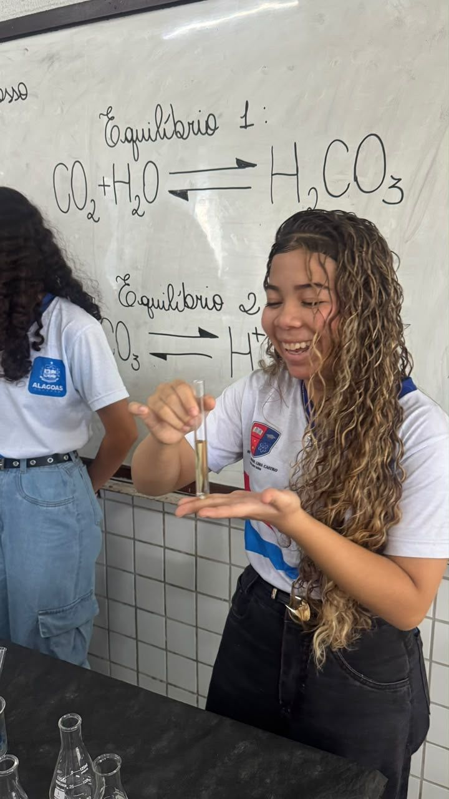

Química
Sopro mágico
O experimento utiliza o indicador azul de bromotimol, que muda de cor conforme o pH da solução. Ao soprar, liberamos gás carbônico (CO₂), que reage com a água e altera o pH, provocando a mudança de cor do indicador.
A alteração de cor depende da substância usada: água ácida, água destilada ou água de torneira.
Professora de Química: Ednilza